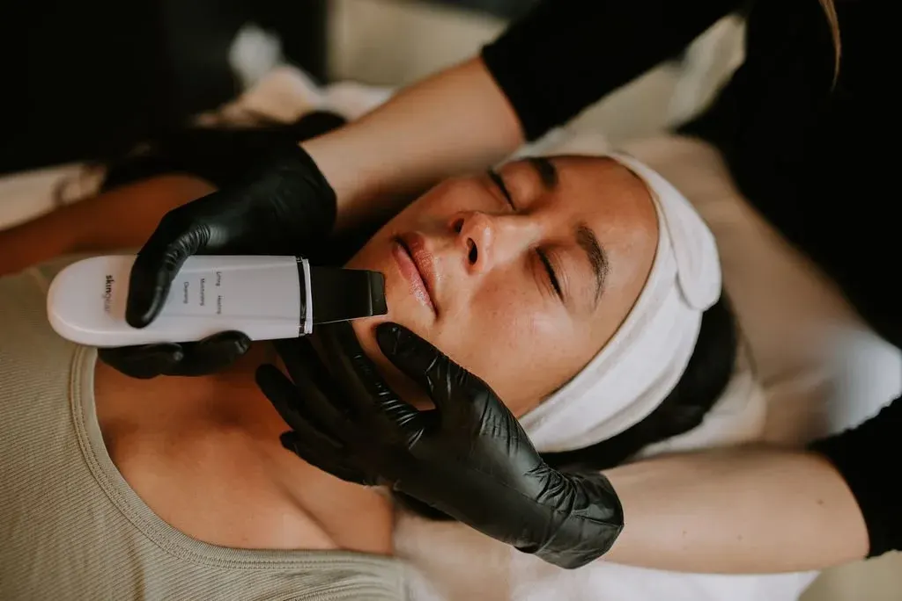
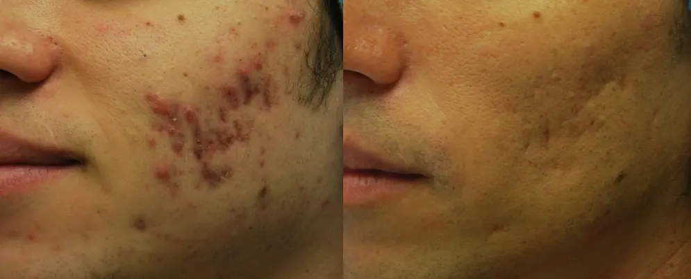

Skin Concern Legend


What Treatments work best on Acne Scarring?
At Face Skin & Body Bar, we understand the emotional and physical impact of acne scars. We offer a range of professional scar treatments to address different types of acne scars and restore your skin's smooth texture and appearance. The most effective acne scar treatment options are often delivered through a combination of in-clinic procedures and a consistent at-home skin care regimen.
Our expert team uses the following proven methods to effectively treat acne scars:
- RF Microneedling: A series of 3 to 4 RF Microneedling treatments can dramatically improve the appearance of acne scars. This advanced procedure combines traditional microneedling with radiofrequency energy to remodel the deeper layers of the skin.
- AlumierMD Medical-Grade Peels: A series of 3 to 5 AlumierMD Medical-Grade Peels, which are powerful chemical peels, can help resurface the skin and reduce the appearance of acne scars.
- Traditional Microneedling: A series of 3 traditional Microneedling sessions can also be highly effective for reducing the appearance of acne scars.
- Medical-Grade Skincare (AlumierMD): Using a professional skin care line like AlumierMD at home is crucial for both preparing the skin for acne scar treatment and maintaining the results.
The best treatment for acne scars is often a personalized plan that combines these powerful modalities to address your specific acne scars. We will assess your skin type, the type of acne scars you have, and your goals to recommend the most effective approach
Benefits Of Acne Scar Treatments
Targeting acne scars with professional, personalized acne scar treatments can lead to a significant improvement in your skin's overall appearance and a boost in confidence. These acne scar treatments are designed to improve skin texture, reduce hyperpigmentation, and create a smoother, more even skin tone.
Specifically, our acne scar treatment options can help to:
- Minimize the appearance of atrophic scars, including boxcar scars and ice pick scars.
- Smooth the appearance of raised scars, such as hypertrophic scars, and in some cases, even reduce the appearance of keloid scars.
- Promote new collagen formation, which is essential for filling in depressed acne scars.
- Improve overall skin texture and elasticity.
By stimulating the healing process of your skin and increasing the production of collagen and elastin, these treatments help to remodel the scarred tissue, replacing it with healthier, smoother skin. Our comprehensive approach ensures that we address the root cause of the scarring and help to deliver lasting results.
Ideal Candidates
The ideal candidates for acne scar treatments are individuals who have a variety of acne scars and are looking for professional solutions to improve their skin's appearance. Our scar treatments are safe and effective for many different skin types and skin tones. It is critical to come in for a complimentary consultation in advance of booking a treatment so we can undergo a skin analysis and determine the most suitable procedure to start with. Traditional microneedling, for example, cannot be performed if you are currently experiencing an outbreak, whereas RF Microneedling and medical-grade peels can be performed directly over existing acne and help to treat the actual breakouts.
Our chemical peels and microneedling treatments are suitable for individuals with a range of atrophic scars, including ice pick scars and boxcar scars. We also have experience treating acne scars on darker skin, using specific protocols to minimize the risk of hyperpigmentation. Individuals with raised scars may also benefit from a consultation to determine the best course of action.
How do Acne Scar Treatments Work?
Our acne scar treatment options work by leveraging the skin's natural healing process to rebuild and regenerate tissue.
- RF Microneedling: Tiny sterile needles create micro-injuries in the skin, triggering a powerful wound-healing response and stimulating collagen induction therapy. The added radiofrequency energy delivers heat deep into the dermis, further boosting collagen and elastin production and remodelling acne scars.
- AlumierMD Medical-Grade Peels: These chemical peels use a blend of acids to exfoliate the top layers of the skin. This process encourages cellular turnover and new skin growth, which helps to reduce the appearance of pigmentation and smooth out uneven skin texture left by acne scars.
- Traditional Microneedling: Also known as collagen induction therapy, this treatment uses fine needles to create controlled micro-injuries in the skin. As the skin heals, it produces new collagen and elastin, which helps to plump and fill in atrophic acne scars like boxcar scars.
Number Of Treatments Required
Acne and acne scarring require consistency and a series of treatments. We typically suggest:
- RF Microneedling: 3 to 4 treatments
- AlumierMD Medical-Grade Peels: 3 to 5 treatments
- Traditional Microneedling: 3-5 treatments
The exact number of sessions will depend on the severity of your acne scars and your desired outcomes.
Acne Scars Treatment Costs
The cost of your acne scar treatment plan will be determined during your consultation and will vary based on the number of sessions and the specific modalities chosen. We offer competitive pricing for our professional scar treatments and will provide you with a detailed quote.
Results And Recovery
Following your acne scar treatment, you may experience some redness and swelling, which typically subsides within a few days. The skin heals gradually, with improvements becoming more visible over weeks and months as new collagen is produced. The long-term results include a significant reduction in the appearance of acne scars, a smoother skin texture, and a more even skin tone. Consistent at-home skin care is essential for maintaining and enhancing these results.


Why Choose Face Skin & Body Bar?
At Face Skin & Body Bar, we specialize in acne scar treatments. Our team is highly trained in advanced procedures and understands the complexities of different skin types and the various forms of acne scarring. We provide a personalized approach, developing a custom acne scar treatment plan for your specific needs, whether you have atrophic scars or raised scars, or are concerned about treating darker skin. We are committed to helping you achieve the smooth, clear skin you deserve.

Before And After
Client Testimonials
I always disliked how my face looked in side-profile photos. My chin seemed to disappear, making my nose and cheeks look unbalanced. I was absolutely thrilled by the transformation a bit of filler made. Lisane was incredible; she took the time to explain that a subtle enhancement to my cheeks and chin would create the perfect facial harmony. I was initially hesitant about using two syringes, but the results were exactly what I had hoped for.
I've been going to Face for Botox for a couple of years, and at my last appointment, I asked Lisane for advice on a full face ‘makeover’. At 45, I wanted my face to reflect how I felt after losing a lot of weight. My skin was starting to look a bit weathered and droopy, especially the lower half..
Lisane recommended a series of radiofrequency treatments for my chin and cheeks, followed by a filler touch-up three months later. She added a couple of syringes to my lower face; cheeks, and chin. I was blown away by the results. The radiofrequency had already significantly improved the droopiness, and the filler was the perfect final touch. I had always been hesitant about filler, but I'm so glad I trusted her.
Had a wonderful experience today! Explained everything, helped out answering questions and comfy place! Would recommend!

Book A Consultation Today
Ready to say goodbye to acne scars? Your journey to smoother, more confident skin begins with a personalized consultation. Our experts will assess your acne scars, discuss your goals, and create a customized acne scar treatment plan just for you.
Book a Complimentary Consultation to determine the best course of treatment for your individual needs.